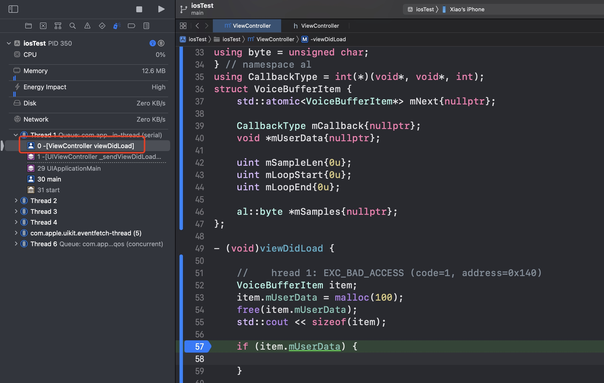
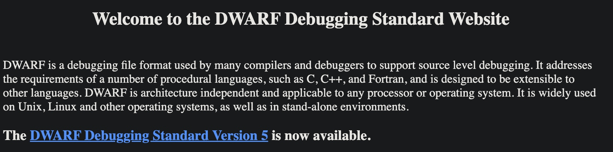
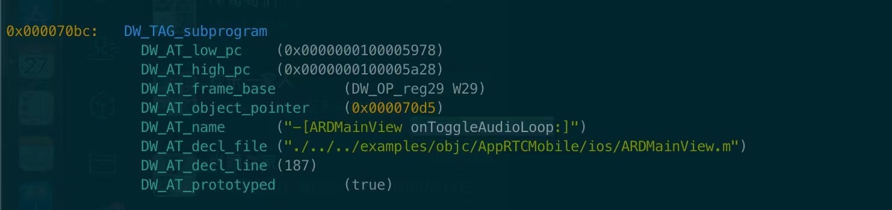
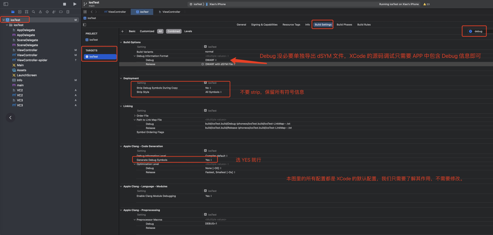
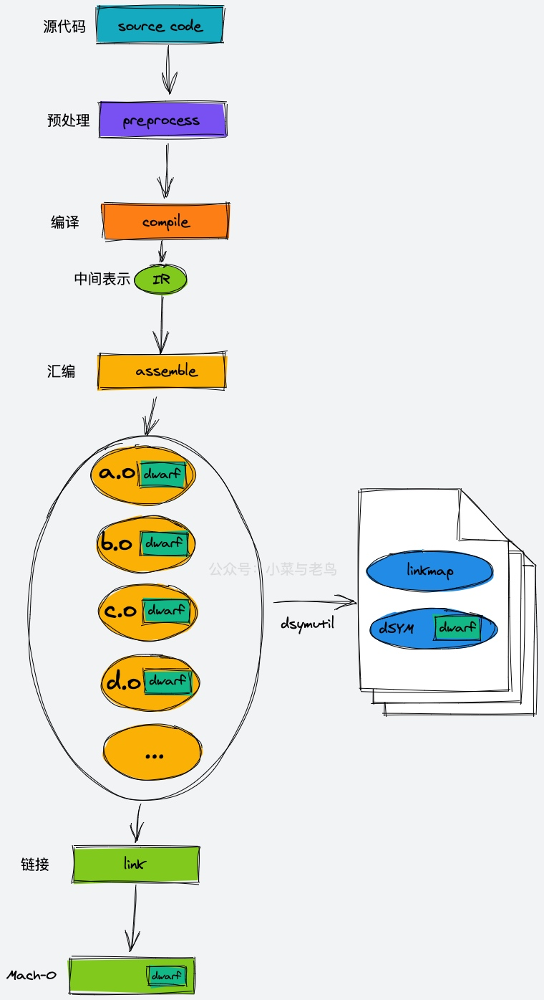

iOS 符号之 DWARF 和 dSYM
作为专业的开发者，除了依赖 Ctrl + C 和 Ctrl + V 之外，还非常依赖源码调试。在使用 IDE 进行单步调试时，我们可以很方便的逐行执行源码。本文介绍一下相关的知识和原理。
注意，简单起见，本文的描述默认都是以 iOS 平台为准，毕竟本文是介绍 iOS 调试的。
单步调试的「假象」

如图，当前执行到哪一行，以及对应的函数堆栈是什么都一目了然，了解编译流程后就知道这显然是「假象」，因为构建完成后已经是机器码了，哪来的 viewDidLoad 这种字符串信息。
此外，日常开发时遇到 crash 时一般都会有堆栈信息，以及 crash 时所执行的代码的行号，这些信息对定位问题非常重要。
上面两个能力都是依赖 DWARF 和 dSYM 实现的。下面具体介绍下。
DWARF 和 dSYM 是什么
DWARF 的全称是 debugging with attributed record formats，是一种源码调试信息的格式，注意，DWARF 是一种格式。
dSYM 的全称是 Debug Symbols，也就是调试符号，一般称为符号文件，注意，dSYM 是一个文件，里面的内容是 DWARF 格式的信息。
此外，DWARF 和 dSYM 是公共的标准，并不是只有苹果特有的，只不过主要是苹果在用而已。
关于 DWARF 的更多信息可以参考 The DWARF Debugging Standard。
这里我们引用网站里的介绍来加深对 DWARF 的理解：
DWARF是一种调试文件格式，许多编译器和调试器都使用它来支持源级调试。它满足了许多过程语言的需求，如c、c++ 和 Fortran，并被设计为可扩展到其他语言。DWARF 是独立于体系结构的，适用于任何处理器或操作系统。它在 Unix、Linux 和其他操作系统以及独立环境中广泛使用。

那么 DWARF 具体是怎样的格式呢。这里给个例子。我们可以通过 DWARF 清晰的看到函数的描述、行号、所在文件、虚拟地址等重要信息，有了这些信息，就可以实现单步调试以及查看 crash 堆栈等能力。

生成 dSYM 文件并查看 DWARF 信息
如果已有一个 iOS APP 文件，如何导出 dSYM 文件呢（导出后才更方便的查看 DWARF 信息）。
// 进入 app 文件目录
cd /Users/xxx/AppMobile.app
// 导出符号信息到 dSYM 文件
dsymutil AppMobile // dsymutil 默认会导出一个同名的 dSYM 文件，在这里就是 AppMobile.dSYM
// 查看 dSYM 文件中的 DWARF 信息
dwarfdump AppMobile.dSYM
Debug 包的符号
通过上面的步骤，我们可以从 APP 中导出和查看 DWARF 信息了，这里有个前提就是 APP 里需要包含符号信息，不然就不存在导出的事情了。
Debug 情况下相对简单些，XCode 会帮我们处理好符号问题。在 XCode 中可以配置如何处理符号信息。

Release 包的符号
在发布时，我们会发布 Release 包，这时候就需要将 APP 中的符号信息导出到单独的 dSYM 文件，然后 strip 掉 APP 中的符号信息，避免泄漏源码信息。
在上传 APP 到 Apple Store之后，如果用户发生了闪退，则我们需要拿到堆栈信息，然后通过 dSYM 找到对应的符号信息，进而定位和修复问题。
应用闪退时，我们可以拿到对应的 APP 的 UUID，然后找到相同 UUID 的 dSYM 文件，就可以一一对应上。
可以通过这个命令查看 dSYM 文件的 UUID：
dwarfdump -u AppMobile.dSYM
符号信息的生成时机
符号信息如此重要，在 APP 的构建过程中是怎样生成的呢，在网上找到一个图，还挺清晰，可以参考下。Xcode编译疾如风-3.浅谈 dwarf 和 dSYM

转载请注明出处：iOS 符号之 DWARF 和 dSYM - 专业点
欢迎关注我的公众号

推荐

公众号推荐
欢迎关注我的公众号一起愉快的交流。